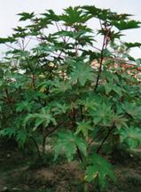
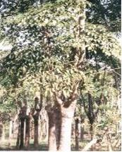
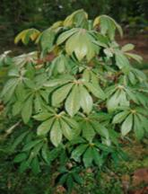
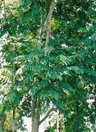
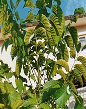

Host Plant
Eri silkworm, S. ricini being polyphagous insect, has a wide range
of food plants. In the forest of N.E. India different food plants of eri silkworm are found abundantly as
enlisted below.
|
No.
|
Scientific name
|
Vernacular Names
|
Family
|
Distribution
|
|
1
|
Ricinus communis Linn
|
Castor
|
Euphorbiaceae
|
Through out India
|
|
2
|
Manihot esculenta Crantz
|
Tapioca
|
Euphorbiaceae
|
Eastern, Southern India&North Eastern India
|
|
3
|
Sapium eugeniifolium Buch-Ham
|
Korha
|
Euphorbiaceae
|
North Eastern India
|
|
4
|
Heteropanax
fragrans (Roxb.)Seem
|
Kesseru
|
Araliaceae
|
Nagaland & Arunachal
Pradesh
|
5
|
Evodia fraxinifolia
Hook
|
Payam
|
Rutaceae
|
N.E., Western & Eastern India
|
6
|
Ailanthus grandis Prain
|
Barpat
|
Simaroubaceae
|
N.E., Western and Eastern India
|
7
|
Ailanthus
excelsa Roxb.
|
Barkesseru
|
Simaroubaceae
|
Throughout India
|
|
8
|
Plumeria acutifolia (Poir)
|
Gulanch
|
Apocynaceae
|
Throughout India
|
|
9
|
Gmelina arborea Roxb.
|
Gamari
|
Verbanaceae
|
N.E., and Eastern India
|
Source: Chowdhury, 2000
and Peigler 2003
Brief description of food
plants
|

|

|

|
|
Castor
|
Kessuru
|
Tapioca
|
|

|

|
|
|
Payam
|
Barpat
|
Barkesseru
|
Castor, Ricinus
communis (Family: Euphorbiaceae)
§
It is the primary food plant of eri
silkworm known in the world since time immemorial for its medicinal
properties.
§
It is a heat loving intermediate
plant usually annual and occasionally perennial in nature. Castor is a cross
pollinated plant but unlike other cross pollinated plants it is inclined
towards self pollination.
§
In India castor is widely distributed in the North Eastern States, West Bengal, Bihar, Rajasthan, Gujrat, Orissa and Andhra Pradesh.
§
The North East States play a pivotal
role in utilizing castor leaves for eri silkworm rearing and contribute major
percentage of the total eri silk production of the country. There are several varieties of castor
available in N.E. India.
§
NBR-1 variety of castor showed best
performance in leaf yield and silkworm rearing in N.E.India.
Kesseru, Heteropanax
fragrans Family:Araliaceae)
§
It is considered as the
second best food plant of eri silkworm next to castor.
§
It is perennial in nature and widely
distributed in the North Eastern States of India.
§
Kesseru plants grow up to 1000 m AMSL.
Tapioca, Manihot esculenta (Family: Euphorbiaceae)
§
It is tolerant to adverse climatic conditions.
§
It is widely distributed in all the
states of North East India. It is locally known as Simalu
alu in Assam.
§
More than 42 species are available in
a wild state of this region.
§
Tapioca is widely distributed in all
the states of North East India and is used for dual purpose by the people – ‘tuber’ as food
and ‘leaves’ for eri silkworm rearing.
Payam, Evodia
fraxinifolia (Family : Rutaceae)
§
It is predominantly distributed in
the state of Nagaland and sparsely distributed in Arunachal Pradesh.
§
In Nagaland,
payam is used as major food plant for eri silkworm
rearing.
§
It is a
evergreen in nature.
Barpat Ailanthus grandis and Barkesseru A. excelsa, (Family:
Simarubiaceae)
§
Both are enigmatic fast growing and
drought resistant trees and deciduous in nature.
§
The word “Ailanthus” is derived from
the Moluccan Island of far eastern Indonesia simply means the “highest”.
§
The genus has 10 species, mostly
native of China, India and S.E.Asia and Australia.
§
Wild eri silkworm
are frequently found in a natural state feeding on Ailanthus leaves.
Hence, they are often called Ailanthus silk moths.
Gulanch, Plumeria acutifolia, (Family Apocynaceae)
§
It is used as ornamental plant
throughout Assam and other parts of India.
§
It is rarely used as secondary food
plant of eri silkworm.
§
Gamari, Gmelina arborea, (Family Verbanaceae),
§
It is
basically a timber plant distributed through out N.E.
and Eastern India.
§
It is
rarely used as food plant of eri silkworm.
§
Eri silkworm fed on gamari leaves yields poor quality cocoons.
PACKAGE
OF PRACTICES ERI HOST PLANT CULTIVATION
A) CASTOR:
Season and climate: The ideal period for plantation is April in northeast region
of India. Castor is a warm season crop. However, it grows under diverse
climatic conditions. In winter season (during long dry spell), its leaf yield
gets considerably reduced. It is highly susceptible to water logging condition
and hence, drainage is a must whenever low-lying area is selected for
plantation.
Soil: Flat and sloppy soil either acidic or alkaline is suitable. Water stagnation is to be
avoided by adopting proper drainage system in the planting area. However,
humus and sandy soil suits for luxurious growth of the plant.
Varieties: One promising variety of castor for eri culture is Non-bloomy red (NBR-1) in northeast India. However, Non-bloomy
green (NBG-1) is another one suitable variety. Variety NBR-1 shows red coloured stem and petiole in the early growing stage. In
mature plants, stem colour becomes grayish.
Besides, the variety is less susceptible to pest attack.
Agronomical practices:
Tillage: Land should be
ploughed 2-3 times to a depth of 20-25 cm and leveled for facilitating good
root penetration and easy weeding.
Spacing: Pit system of
plantation is followed for raising castor for eri silkworm rearing. For
sowing of seeds, 20x25x25cm(LxBxD)
size pits are to be prepared at a distance of 1x1m from plant to plant and row to row for luxuriant growth and
leaf yield. In each pit, 1 kg FYM is to be added as basal dose and is covered
with soil.
Seed treatment: Before sowing the seeds
it is necessary to treat the matured and healthy seeds with Bavistin 2gm/kg to check fungal infections like leaf blight,
seedling blight and wilt.
Sowing: Two seeds per pit at a depth of 2.5–3.0 cm are to be sown.
Germination takes place after 7-10 days. Only one healthy seedling per pit has
to be allowed for vigorous growth after germination.
Application of fertilizer: In addition to organic manure (FYM) applied as basal dose,
chemical fertilizer is also important for better growth and leaf yield in
castor. Inorganic fertilizer NPK @ 60:40:20 kg /hectare is recommended as a
basal dose of fertilizer after completion of one month of the germination of
the seedlings. As 2nd dose, 30 kg nitrogen/ha should be applied
after attaining the age of three months.
Weeding & inter-culture: A large number of undesirable weeds absorbed nutrients and
moisture of soil, resulting stunted growth of castor. Regular weeding helps
for luxuriant growth of castor. Besides, Ploughing, hoeing, weeding, etc. are
to be carried out timely after and before application of fertilizer for
healthy growth and leaf yield.
Harvesting of crop: Four leaf harvests are being made in northeast region from a
single plant in a year during May-June,
July-August, September-October, November-January and February-April.
|
Crop
|
Yield/Acre/year (kg)
|
|
May-June
|
1400
|
|
July-August
|
1200
|
|
September-October
|
1200
|
|
November-February
|
1000
|
B) KESSERU:
Season: August - September
is the ideal season for plantation. It requires moderate rainfall during
initial period but it can withstand even high rainfall after attaining
maturity.
Soil: Kesseru grows well in acidic soil. High, flat and
sloppy land is better. Water stagnation is to be prevented by adopting proper
drainage system.
Nursery technique:
Selection of
land: For nursery, flat and well-drained
land is to be selected.
Season: February is an
ideal season for raising nursery.
Preparation of
beds: Land should be ploughed thoroughly and make it level. Prepare
6x2 m size beds and raise the same up to 15 cm height. Apply 6 cft FYM and equal quantity of sand per bed, mixing
thoroughly with the soil.
Seed collection: At the time of ripening
of Kesseru fruits, it should be covered with
nylon net to protect from birds. Collect the ripened fruits during February and keep the same in water
overnight. Next morning, fruits are to be rubbed with a gunny cloth to remove
the pulp of the seeds. Keep seeds in water to separate sunken healthy and
viable seeds and reject the floating seeds.
Seed treatment: Treat seeds with Endofil-M 45 @ 2-3
gm per kg to
check fungal disease.
Seed sowing: Sow 800 seeds/bed at a spacing of (15x 10) cm. Cover the seed
beds with thin layer of straw to retain moisture. Daily sprinkling of water is
necessary during dry season. Remove the straw after germination of seeds.
Inter-cultural
operation: Attend regular weeding at an interval of 20-30 days till the
seedlings attain height of 20-25 cm.
Establishment of
plantation:
Preparation of
land: For kesseru
plantation, land preparation should be started during post monsoon period i.e.
last week of July. Deep
ploughing of land to a depth of 20-30 cm and leveling is recommended. For
plantation, prepare 30x30x30 cm pit at a distance of 2x2m spacing (in uneven
hilly area 3x3 m spacing can be practiced to facilitate inter-cropping). In
each pit, apply 5 kg FYM and mix
thoroughly with soil.
Transplantation: Transplant 6
months old healthy seedling (25-35 cm tall) to each pit. It is more
preferable to plant
on a rainy day.
Cultural
operation: Carry out hoeing and weeding
whenever required.
Maintenance of
plantation
Application of
manure and fertilizer: During April apply 5 kg FYM per plant once in a year. Apply NPK
@125:75:25 kg/ha in two equal split doses during April and September.
Pruning: Pruning is to be done after attaining the age of three years at
a height of 1.75 m preferably during February. Subsequent pruning is to be
done after the interval of 3 years.
Harvesting of
crop: Three leaf harvests can be done in a year during I crop: April-May, II crop: August-September and
III crop:December-
February.
|
Crop
|
Yield/Acre/Year (kg)
(2x2 m spacing)
|
Yield/Acre/Year (kg)
(3x3 m spacing)
|
|
April-May
|
4500
|
2700
|
|
August-September
|
4000
|
2700
|
|
December-February
|
2500
|
1350
|
|
Total
|
11000
|
6750
|
Top
|